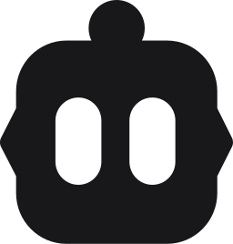
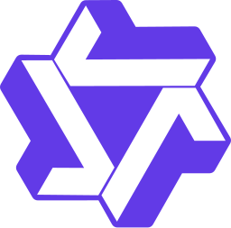

Підміняє моделі
Програма просить claude-opus-5-5, а відповідає модель, яку ти вибрав. Спрацьовують лише точні назви.
CarteLink збирає твої акаунти й API-ключі за адресою 127.0.0.1:8317. Коли акаунт упирається в ліміт, шлюз сам бере наступний.
Безкоштовно, код відкритий під MIT. Версія 3.0.0 для Windows 10/11 і macOS 13+.
Програма надсилає запит, CarteLink перевіряє ключ, застосовує правило й віддає запит моделі з твого акаунта. Усе це видно наживо.
Як запит проходить через шлюз
Clineclaude-sonnet-5-5Готово14с
Qwen Codeqwen3-coder → kimi-k2Готово21сPOST /v1/messages
#4127
0,6 с
Відповідає
cl-api-claude
Claude Code2 мсcl-api-claude1 мсopus → gemini-3-pro1 мсAntigravity, акаунт 2У черзістрім, 1 842 токениУ черзіПрограма просить claude-opus-5-5, а відповідає модель, яку ти вибрав. Спрацьовують лише точні назви.
Акаунт на ліміті чи відповіла запасна модель: CarteLink пише про це одразу.
Для п'яти програм шлюз сам вписує адресу й ключ, а потім уміє повернути файл як був.
14 дизайнів, редактор власної теми й 17 мов інтерфейсу. Блоки на кожній сторінці можна переставити або сховати.
Без реєстрації й входу. Один порт, один ключ, і кожна програма підключається за готовою інструкцією.
Акаунти й API
Програми
Плюс понад 70 OpenAI-сумісних провайдерів із готовими пресетами й інструкції ще для двох десятків програм, серед них Aider.
Програма шле запит на 127.0.0.1:8317 зі своїм ключем. CarteLink перевіряє ключ і таблицю моделей, а рушій CLIProxyAPI вибирає акаунт.
Windows 10 і 11 або macOS 13 Ventura і новіші. Тип чипа Mac видно в «Про цей Mac».
Усі релізи на GitHubWindows: просто запусти .exe, встановлення не потрібне. Mac: відкрий .dmg і перетягни CarteLink у Applications.
Збірки не підписані. Windows: «Докладніше» → «Усе одно запустити». Mac: «Усе одно відкрити» в налаштуваннях безпеки або команда нижче.
Адреса й ключ є на сторінці «Огляд». Або натисни «Підключити програму», і CarteLink впише їх сам.
CarteLink написаний на Rust. Рушій CLIProxyAPI (Go, MIT) вшитий у той самий файл. Читай, змінюй і збирай сам.
Не знайшов відповіді: напиши в Issues на GitHub.
Відкрити IssuesНічого. CarteLink безкоштовний, код відкритий під MIT. Платиш лише за свої акаунти й API, якщо вони платні.
Ні. Вхід через Telegram прибрали у версії 2.8.0: запустив, і шлюз працює.
Так: один файл CarteLink-3.0.0-windows.exe для Windows 10 і 11. Закриття вікна ховає CarteLink у трей біля годинника.
На твоєму комп’ютері: %AppData%\CarteLink на Windows, ~/Library/Application Support/CarteLink на Mac. Файли не шифруються, тому нікому не пересилай цю папку.
Збірка не проходила нотаризацію Apple. Дозволь запуск один раз у «Конфіденційність і безпека».